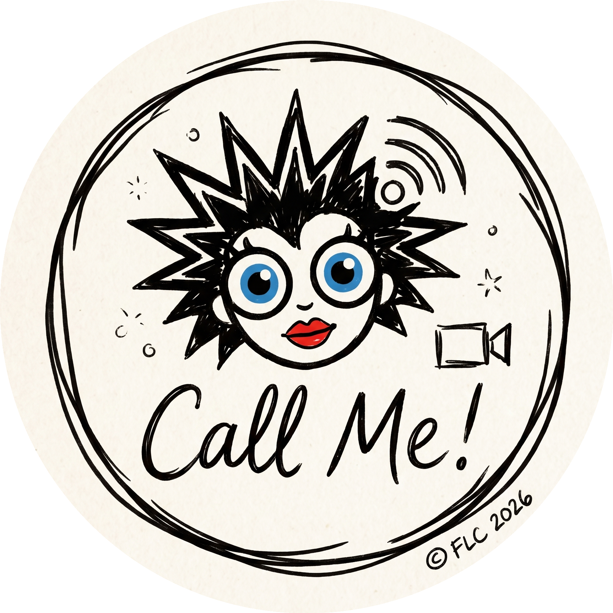

● ON AIR
Guest Broadcast Client
Your Camera (Sending to Studio)
MIC
Studio Retorno (Mix-Minus)
STUDIO
Camera Device
Detecting cameras...
Microphone Device
Detecting microphones...
Audio Mode:
📞 Standard Voice Call (Recommended: Zoom/Meet APM Engine)
🎙️ High-Fidelity Original Sound (Headphones / External Mic)
🏢 Noisy Room (Enhanced Suppression)
Connect to Studio
Disconnect
My Guest ID:
Registering...
Camera Active